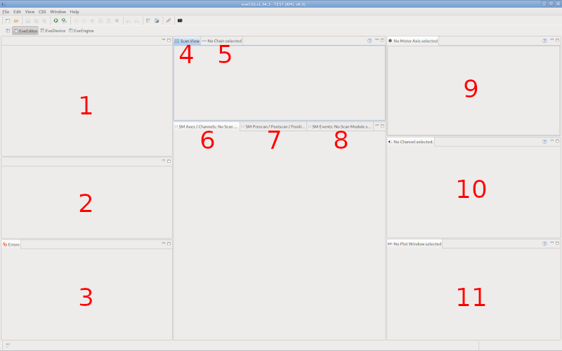

The image below shows an overview of the EveEditor Perspective.

| 1 | Editor Area | graphical representation of scans |
| 2 | Plot View Place Holder | Plots of scans being executed are shown here |
| 3 | Error View | message log |
| 4 | Scan View | scan properties |
| 5 | Chain View | chain properties |
| 6 | SM Axes / Channels View | general properties, axes and channels of a scan module |
| 7 | Scan Module View | additional scan module properties |
| 8 | Motor Axis View | motor axis properties |
| 9 | Detector Channel View | detector channel properties |
| 10 | Plot Window View | plot window properties |